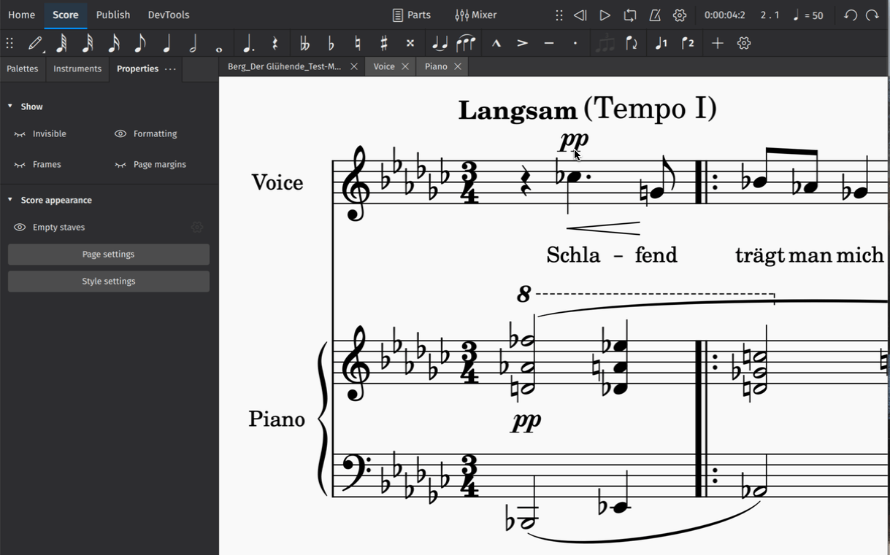

Create your first score
We’ll start by creating a new score from a template (Alternatively, you can learn about creating a score from scratch in Adding and removing instruments).
To create a score from a template:
- Click New score in the Scores screen
- In the New score dialog that appears, browse templates by Category, or use the search bar to look up a template directly
- Click Next to enter additional score information (or skip this step and let MuseScore pre-fill your score with default information, which you can always change later)
- Click Done to create your new score

Entering score information
In the Additional score information screen, you can set:
- The initial key signature (the default key signature contains no sharps or flats)
- The initial time signature (the default time signature is 4/4)
- The initial tempo (Click Tempo, then Show tempo marking on my score for this to appear)
- A pickup bar (anacrusis or upbeat bar), and its duration
- The initial number of bars in the score (the default is 32, but you can add/remove bars from the score edit window)
Entering notes
The simplest way to enter notes in MuseScore is to:
- Hit
Non your keyboard to enter the note entry mode - Start typing note names (
A,B,C,D,E,F,G)

You’re now engraving in MuseScore! You’ll notice the blue note input highlight, which indicates that you are in note input mode. It shows you where in the bar your next note will be entered.
You can specify the duration of each note you enter in the Note input toolbar. To change note duration:
- Ensure you are in note input mode (See above)
- Click on the desired note duration, or
- Use shortcut keys
1through7to select different note values

Learn more about this topic in Entering notes and rests.
Adding items from the palettes
The Palettes panel contains almost every notational object you might need to add detail to your score. The simplest way to add palette items to your notation is to:
- Select an existing object (or range of objects) in your score (e.g. a notehead, clef, bar, etc.)
- In the Palettes panel, open a palette by clicking the triangular arrow button
- Click once on a palette object

Learn more about this topic in Palettes
Making adjustments in Properties
The Properties panel can be revealed by clicking on the Properties tab on the left side of the screen:

(Users of MuseScore prior to version 4 will know this as the Inspector).
The properties panel will show settings that are specific to the object being selected. These settings usually affect the visual appearance of the selected object. Most of the time, changes you make in Properties will apply only to the object you have selected (e.g. you’ll change the selected hairpin, and not every hairpin in your score).
As you add details to your score, click on any object to see what settings are available.

Learn more about this topic in Properties.
Inserting and deleting bars
To insert a single bar:
- Click on a bar to select it
- In the Bar section of Properties, click Insert bars
- Click the + button
This Bar section contains controls that allow you to insert multiple bars at once. Simply set the number of bars you wish to insert in the text field. You can also use the dropdown menu to change the point where new bars will be inserted.
To delete a bar or group of bars:
- Select the bar(s) you wish to delete
- In the Bars popup, click the trash can icon

More information on this topic can be found in Bars.
Saving your score
To save your score locally to your computer's harddrive:
- Select File→Save
- In the dialog that appears, select folder and fill in the required info such as file name, click Save or OK
To save your score to the cloud on musescore.com:
- Select File→Save to Cloud.
- You may be asked to sign in to your account on musescore.com.
- Fill in the Name of your score.
- Set a Visibility. Private means only you may see your score. Unlisted means anyone with the correct link may see your score. Public means anyone may see your score.
- Press Save.
You can find all your cloud scores by going to Home > Scores > My online scores (look for the files marked with a small blue cloud symbol). Read more about this in Opening and saving scores.
Exporting your score
Export allows you to create non-MuseScore files, such as PDF, MusicXML, MIDI, and various audio and image formats.
To export your score:
- Select the Publish tab
- Click Export
- Select the parts you wish to export
- Choose the file format for your exported file(s)
- If exporting multiple parts, choose whether you want each part combined into one file or exported to as separate files
- Click Export
You can also share scores online on musescore.com.